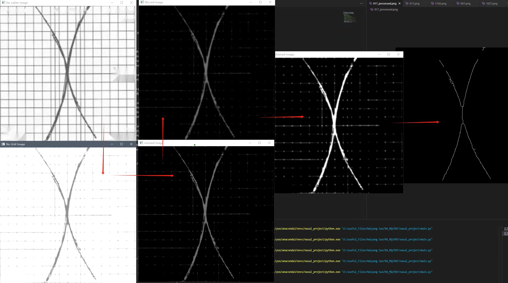
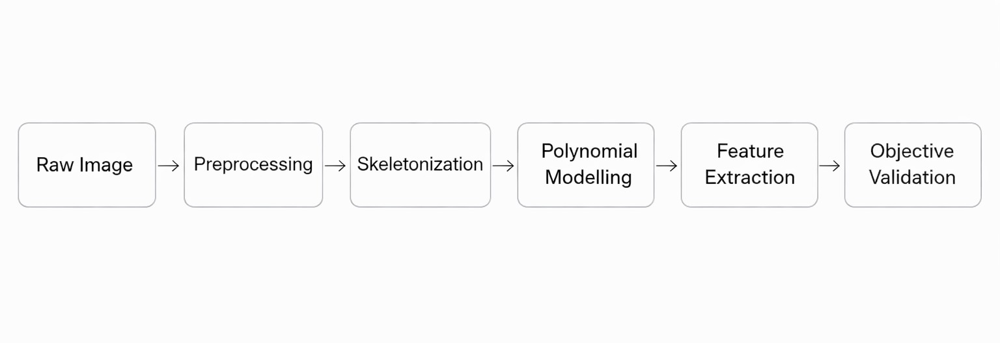
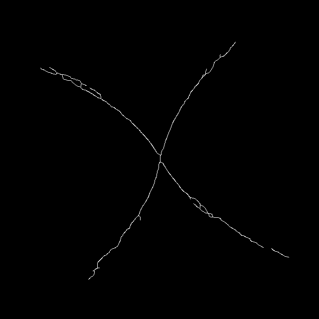
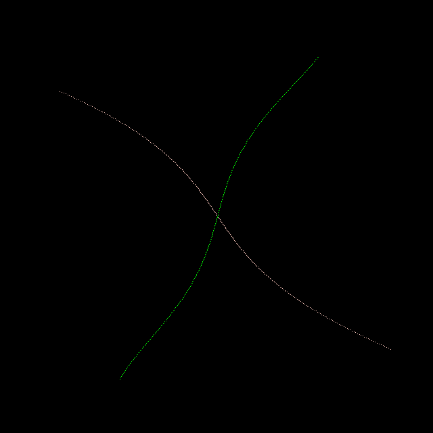
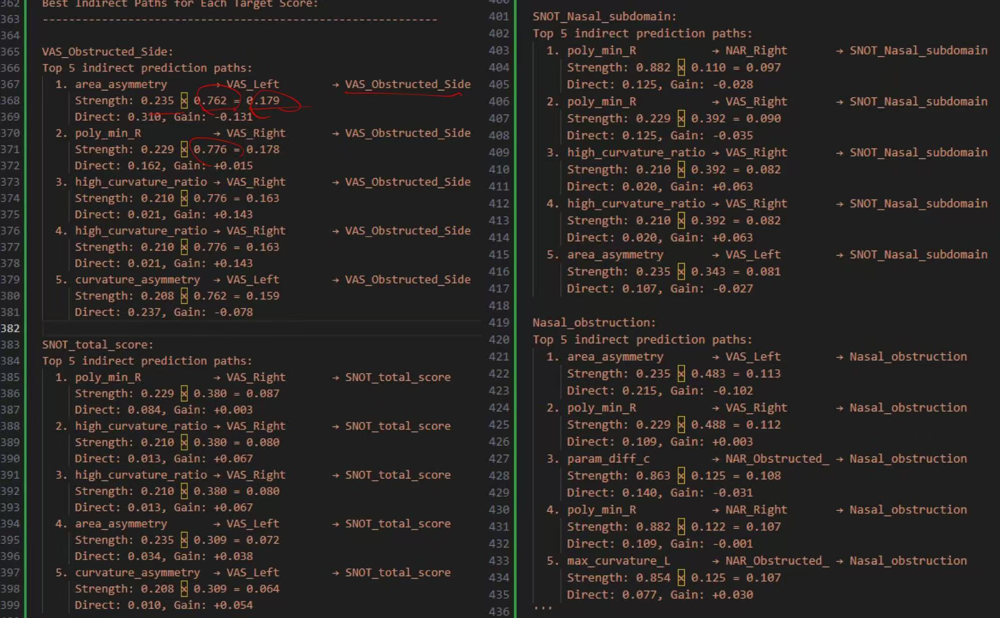

Geometric Feature Analysis
of Nasal Airflow Images
A clinical image analysis workflow that transforms noisy airflow images into interpretable geometric descriptors, linking extracted structural features with objective airway resistance and clinical diagnostic insight.

Problem
Transform noisy clinical airflow images into reliable geometric representations for quantitative modelling.
My Role
Designed the preprocessing pipeline, skeleton extraction, feature engineering workflow, and clinical validation analysis.
Outcome
Built a robust geometric modelling framework with strong correlation to objective NAR measurements.
Methodology Overview
The workflow standardised clinical image inputs, removed labels and grid artifacts, extracted clean skeleton curves, separated left-right nasal structures, and generated hundreds of geometric descriptors spanning morphology, asymmetry, curvature, derivatives, and frequency domains.

Image Preprocessing
Input images were normalised to a consistent resolution and enhanced through brightness and contrast correction. Fixed labels, measurement markers, and grid artifacts were removed to isolate the clinically relevant airflow structure.
- Brightness and contrast standardisation
- Removal of labels and fixed markers
- Gridline reduction for clean morphology extraction
Skeletonization & Structural Parsing
The cleaned binary image was reduced into a single-pixel skeleton using morphology-based thinning. Artifact tails and noise branches were removed, and the central intersection point was estimated to consistently separate left and right airway curves.
- Morphological thinning for skeleton extraction
- Artifact pruning and tail removal
- Left-right curve grouping through centre-point estimation

Polynomial & Geometric Feature Extraction
Multi-degree polynomial fitting was used to model airway geometry at multiple scales. Beyond raw polynomial coefficients, the framework extracted curvature, tortuosity, asymmetry, derivative, Fourier, width, and angular descriptors, producing 500–800 interpretable features per image.
- Multi-degree polynomial fitting
- Curvature and tortuosity descriptors
- Fourier and derivative-based features
- Asymmetry and airway width metrics

Clinical Correlation Analysis
Extracted geometric descriptors were compared against subjective symptom scores and objective nasal airway resistance (NAR) measurements. While subjective correlations remained weak, polynomial and asymmetry-based features showed strong relationships with objective NAR values.
This validates that the extracted geometry captures physiologically meaningful airway structure, even if the link to symptom perception remains unclear.
Strongest validation: objective NAR correlations reached up to 0.949, supporting the technical correctness of the polynomial framework.

Key Findings & Future Direction
The strongest validation signal consistently came from objective NAR measurements, indicating that the extracted polynomial geometry reliably captures measurable airflow structure. The absence of strong subjective correlations may reflect limited sample size or a genuinely weaker relationship between perceived symptoms and measurable airway geometry.
Future work will expand the clinical dataset and integrate multimodal patient signals, including symptom history and additional physiological measurements, to improve predictive modelling and clinical decision support.